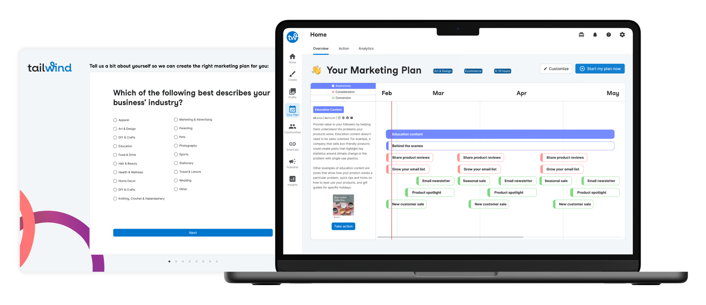
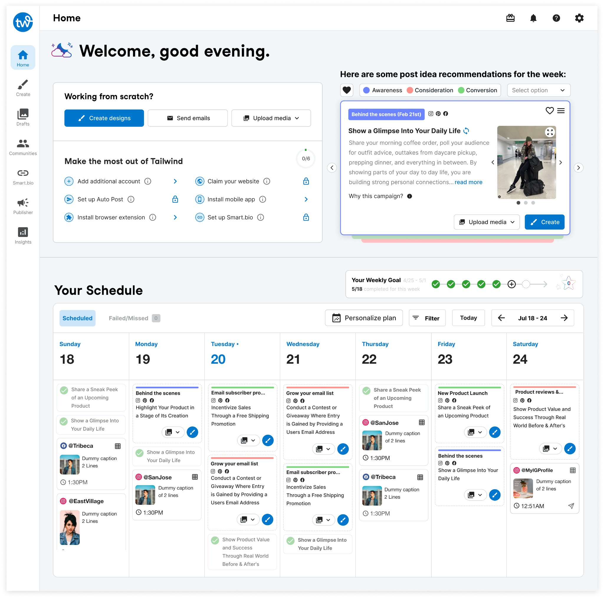

Tailwind Copilot
An all-in-one AI marketing assistant that tells small business owners exactly what to post, and when, to grow their business.
The product
Tailwind is a social media marketing tool for small business owners and entrepreneurs who don't have a marketing team. It helps them design, schedule, and publish content across channels, with extras like a hashtag finder, shoppable bio link, and post-time suggestions.
Copilot was a new 0-to-1 product inside Tailwind: an assistant that hands each business owner a tailored marketing plan built on best-in-class practices, so they know exactly what to do next.
Small businesses have passion, not a marketing team
Big companies have marketing teams to maximize revenue. Small business owners don't have that luxury, they have ideas and products, but not the know-how to get them in front of the right audience.
That's the user. For her, marketing is one more thing she can't get to.
- No inspiration for what to post on social media
- No time to design and schedule posts
- Needs results now, but doesn't know what will work
- No strategic plan, only guessing
Tell users exactly what to post, and when
Market research surfaced an untapped gap: no tool told users precisely what to post and when. Copilot fills it with a personalized marketing plan that removes the stress and guesswork, so owners can focus on making good products.

What success looked like
For users. Help people with no marketing experience grow their business through customized plans with step-by-step instructions.
For the business. Streamline discovery, experience, and adoption of Tailwind to activate new customers, and expand the addressable market to small businesses in their earliest marketing stages.
From survey to published post
Personalize
A quick survey gathers each owner's business type and marketing experience, then generates a personalized plan with an interactive overview of how it helps them reach their goals.

Browse
The plan breaks into daily, actionable items: a deck of "prompt cards" with post ideas, explanations, visuals, and CTAs. Scheduled prompts flow into a calendar that visualizes the week and motivates action.

Execute
From a chosen prompt, users start with design or go straight to publishing, guided by a mini prompt card. After scheduling, a quick recap surfaces more tasks to keep the momentum going.
Track & adjust
The plan timeline lets users track progress and adjust after trying things first-hand, so the plan stays theirs, not a fixed script.
Three problems worth solving well
Accounting for two different types of users
Interviews revealed two behaviors: people who want to do the minimum each day, and people who want to get ahead. We'd designed only for the first, surfacing one time-sensitive prompt at a time to avoid overwhelm. To serve the second, I added a way to tackle multiple tasks at once and make concentrated progress, a card deck for focus, an interactive timeline for autonomy.
Creating a seamless experience
We first shipped Copilot as a standalone feature to gauge interest. That isolated MVP taught us about behavior, adoption, and UX friction. Once we'd validated desirability, I integrated the best parts into the core homepage Hub, so every login leads with the most important task and a clear view of the week ahead.
Disclosing the right amount of information
A full marketing plan, funnel, campaigns, prompts, overwhelms an amateur marketer. Early on we showed many prompts as bare titles; users couldn't tell them apart and froze on too many choices. I moved to a card-deck interface showing one prompt at a time with just enough to decide, and used progressive disclosure to reveal detail in a side panel only when a card is activated.
Measured on a real rollout
Based on a two-week rollout to two-thirds of new sign-ups, users who received a personalized marketing plan were 73% more likely to schedule their first post (engagement) and 30% more likely to upgrade (conversion).
Built to grow
The design focuses on organic social (Facebook, Pinterest, Instagram) and email, but the system is built to expand into paid social and other untapped channels to widen Tailwind's reach.